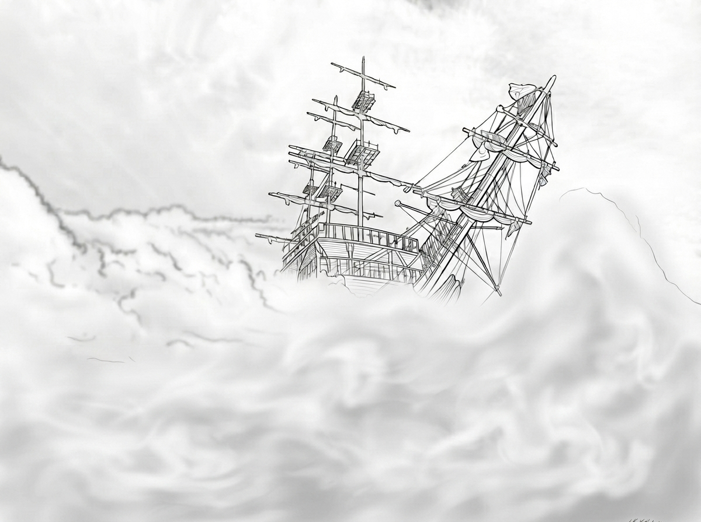

第 5 章，共 12 章
平靜風和海

我的主人和祂的門徒乘船去另一個村莊。那天，風和海浪有一場小小的較量。
風和海浪想要爭辯，到底是誰移動了天上的雲？是風呢？還是海浪呢？也許是因為下午太安靜、太無聊了，風就一次又一次地從山頂吹向海面，海浪也不甘示弱，一浪接著一浪地撲向風。
我的鷹夥伴們也飛了過來。我們展翅，在風浪上空翱翔。
可是，天空漸漸變了。原本明亮的天空，慢慢被烏雲遮住。夕陽的金色也一點一點褪去，天空變成了灰色，然後是深灰色。遠處的雲層越堆越高，像一座座黑色的山。風也越吹越急。
忽然，大浪一個接著一個掀起來，風猛烈地吹著，整片海都像翻了起來。讓岸邊的鳥兒、山坡上的鹿群，以及水中的魚兒都驚慌起來。
風和海浪的遊戲，反覆了許多次，小船也跟著劇烈搖晃。我的主人的門徒，有些是很有經驗的漁民，連他們都害怕起來。漁民們喊著：
「我們要淹死了！」
其中一人走進船內，叫醒老師：
「主啊，救救我們吧！」
我的主人驚醒了，說：
「你們怎麼這麼害怕？你們還沒有信心嗎？」
祂就斥責風浪，說：
「住了吧！靜了吧！」
風和浪立刻停了。整片海面，突然安靜下來。那就像老師走進教室的時候，小學生頓時變得安靜。
船上的漁人驚訝地說：
「這是誰？連風和浪都聽祂的！」
風和浪的調皮，使得這個無聊的下午增添了一些樂趣。
我更是因為我的主人讓他們看見祂是萬物之主，而感到驕傲。祂只是說了一句話，風和浪就安靜了。
我只是覺得非常奇怪：我們鷹看見風和浪聽祂的話，就知道祂是萬物之主。可是你們人類，總要等祂做給你們看，才肯相信。
人類真的很奇怪。
一場風來了，我們就都飛走了。